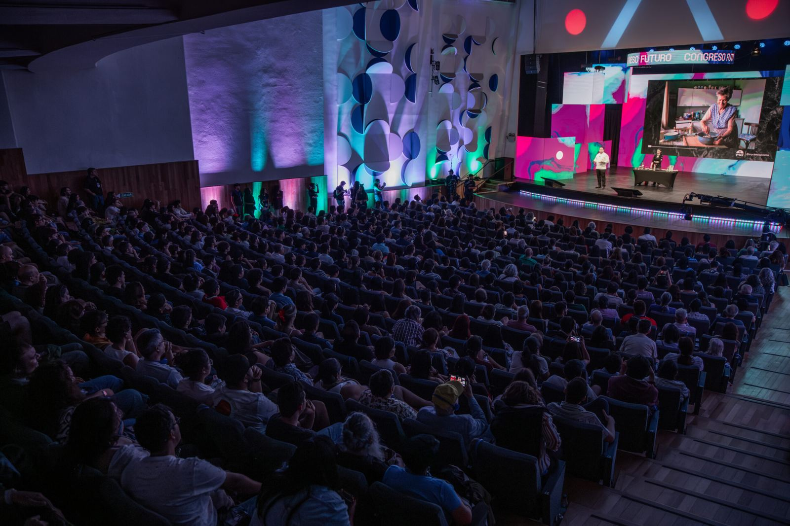

Conferences · Tech
Congreso Futuro 2027
- Dates
- –
- Venue
- Centro Cultural Estación Mapocho
- Location
- Santiago, Chile
- Format
- In-person
- Category
- Tech
- Industry
- Science / Technology / AI (public conference)
- Organiser
- Fundación Encuentros del Futuro with the Senate of Chile
- Expected attendance
- 65,000
- Official website
- https://congresofuturo.cl/
About
16th edition, theme 'El Desafío de Ser Humanos' (AI and the human condition). Free; registration opens 17 Dec 2026. Chile dates are local (mainland Chile time: UTC-3 in the southern summer, UTC-4 in winter; Easter Island is two hours behind the mainland).
Topics: artificial intelligence, science, technology, future of humanity.
Official close-out news (2026 edition): in-person registrations 'bordea las 65 mil personas a nivel nacional' (Santiago plus regional activities; 110,000+ digital views not counted).
Sources
- Official — https://congresofuturo.cl/
- Official — https://congresofuturo.cl/informate/congreso-futuro-anuncia-nueva-version-en-estacion-mapocho-enfocada-en-el-desafio-de-ser-humanos
- Official — https://congresofuturo.cl/informate/congreso-futuro-cierra-exitosa-edicion-aniversario-marcada-por-alta-participacion-proyeccion-internacional-y-foco-en-incidencia-publica